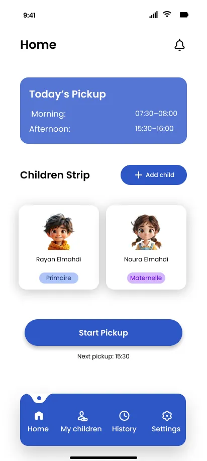
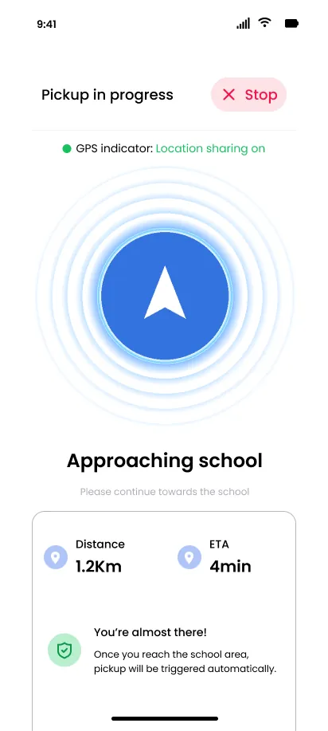
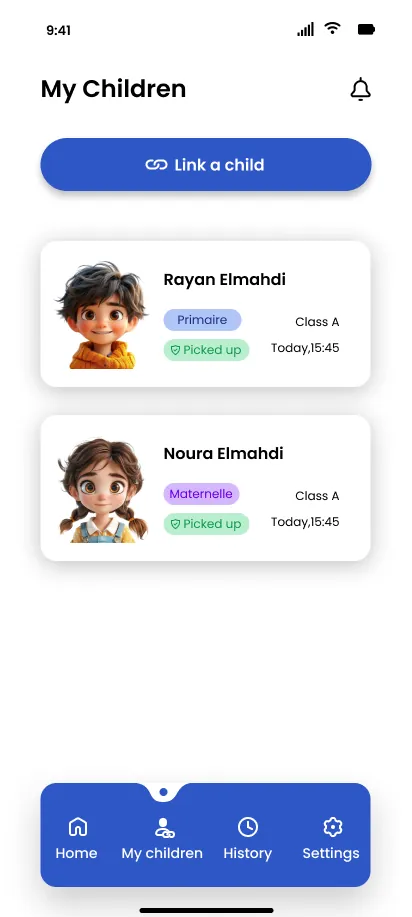
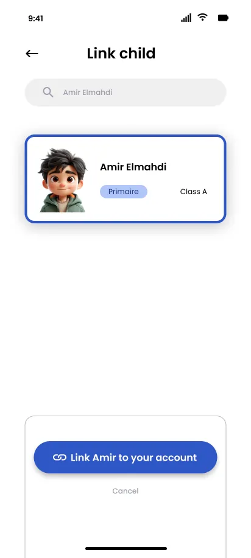
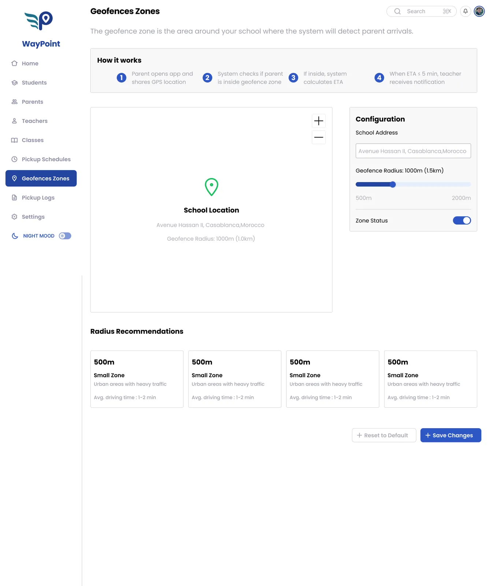
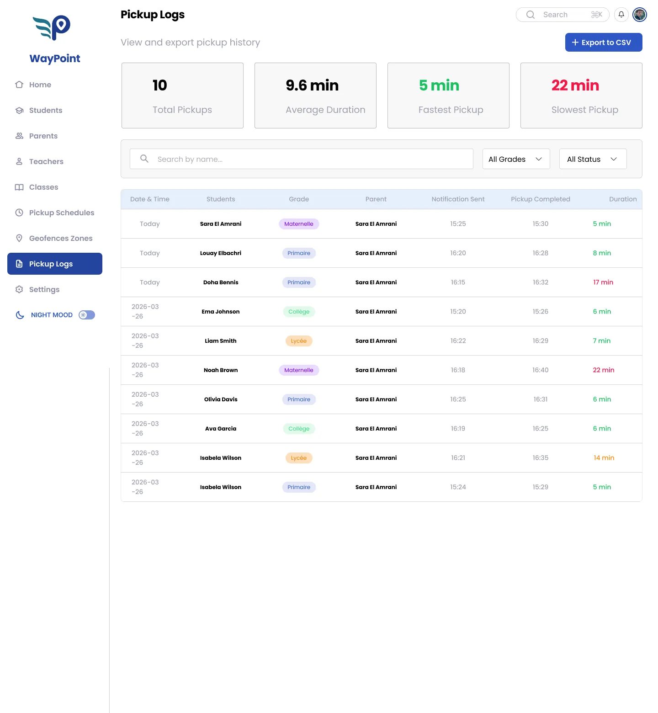
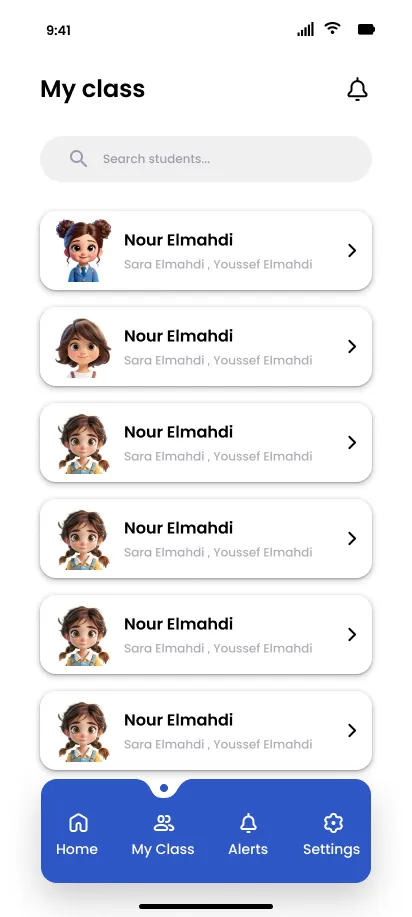
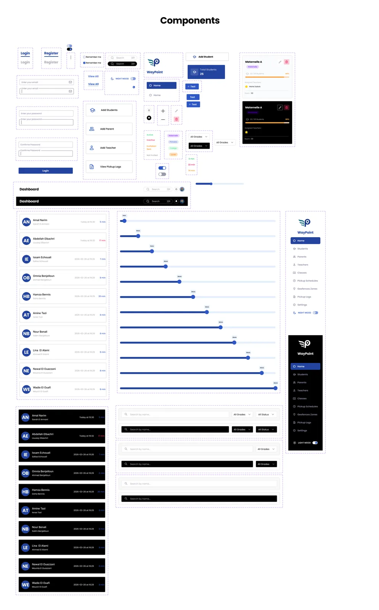

WayPoint
WayPoint is a school transportation management system I designed during my internship at International School El Jadida: a parent app for live pickup tracking, a web admin for the school, and a teacher companion — built on one design system.
- RoleUX/UI Design
- DeliverablesParent app, admin & design system
- StatusDesign delivered
- PaletteBlue & white
- Year2026
The parent
app
Parents open the app to today's schedule, their linked children, and one big action: Start Pickup. From there the screen becomes a live tracker: distance and ETA update as they get close to the school.




How pickup
works
It all runs on the geofence: a parent opens the app, the system checks their GPS against the zone around the school, and computes the ETA. Under five minutes out, the teacher gets the alert. No manual check-in, no lost phone calls.

The school
side
The web admin runs the whole school: students, parents, classes, schedules and pickup logs. Every pickup becomes a number — total count, average duration, fastest and slowest — so the school can spot the slow ones. Teachers get a lighter companion app with the class list and alerts.


One design
system
Every screen, from parent app to admin, comes from the same component library: colors, type scale, spacing, forms and cards defined once, reused everywhere.
